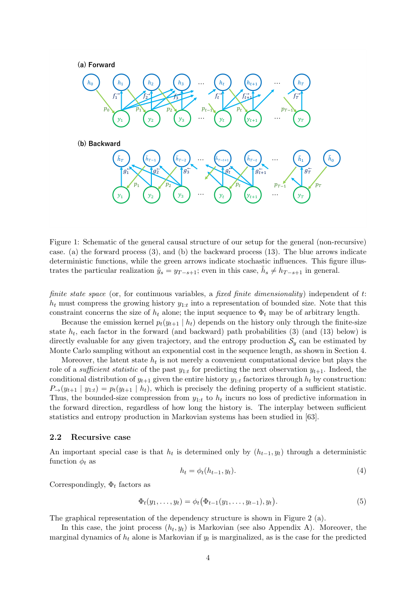

#1
★ 7/10
Stochastic Thermodynamics for Autoregressive Generative Models: A Non-Markovian Perspective
自回归生成模型的随机热力学：非马尔可夫视角

图 Figure · Page 4 of paper
🎯 用随机热力学框架量化自回归生成模型的不可逆性
A stochastic thermodynamics framework quantifies irreversibility in autoregressive generative models like GPT-2.
| 维度 | 中文 | English |
|---|---|---|
| ❓ 待解决 的问题 |
自回归模型（如Transformer、RNN、状态空间模型）在生成每个token时依赖过去所有信息的压缩摘要，产生的序列在数学上是"非马尔可夫"的。这使得传统热力学和信息论工具无法直接使用，也没有方法能在不面临指数级计算代价的情况下，度量这类模型生成过程的"不可逆性"或熵产生。 | Autoregressive models (Transformers, RNNs, SSMs, Mamba) generate sequences by conditioning each new token on a compressed summary of the past, making the observed output process genuinely non-Markovian — meaning standard thermodynamic and information-theoretic tools cannot be directly applied. There was no principled way to measure "irreversibility" or entropy production in such models without facing exponential computational cost. |
| 💡 解决 的亮点 |
- 首次将随机热力学应用于自回归AI模型，统一了Transformer、RNN、卡尔曼滤波、状态空间模型等多种架构。 - 提出可从采样轨迹高效估计的熵产生量，避免了非马尔可夫过程通常面临的指数级计算代价。 - 严格证明熵产生可分解为每步非负贡献，每项进一步拆分为"压缩损失"和"模型不匹配"两个具有信息论意义的量。 | - Novel application of stochastic thermodynamics to autoregressive AI models, unifying Transformers, RNNs, Kalman filters, SSMs, and Mamba under one framework. - Introduces an entropy production estimator that is efficiently computable from sampled trajectories, bypassing the exponential cost normally associated with non-Markovian processes. - Proves an exact decomposition of entropy production into non-negative per-step terms, each splitting into a "compression loss" and a "model mismatch" — two information-theoretically interpretable quantities. |
| 🧪 实验 内容 |
框架在两个设置下进行了验证：（1）以GPT-2（预训练Transformer大语言模型）为概念验证，测量了自然语言序列在token级和句子级的熵产生；（2）在线性高斯情形下进行案例研究，此时自回归模型退化为卡尔曼创新表示，可解析推导熵产生的闭合表达式，用于与理论公式交叉验证。 | The framework was validated in two settings: (1) a proof-of-concept experiment on GPT-2 (a pre-trained Transformer-based LLM), where token-level and sentence-level entropy production were measured on natural language sequences; (2) a linear Gaussian case study where the autoregressive model reduces to the Kalman innovation representation, allowing closed-form analytical derivation of entropy production and cross-validation of the theoretical formulas. |
| 📊 实验 结果 |
对GPT-2，逐token计算了熵产生值并汇总至句子级，发现"令人惊讶"或上下文不一致的token具有更高的熵产生。在线性高斯（卡尔曼）情形下，解析推导出熵产生的闭合表达式，验证了理论预测的精确分解。本文未报告大规模基准对比，属于以概念验证数值实验为主的理论工作，无具体性能提升百分比。 | For GPT-2, token-level entropy production values were computed for individual tokens and aggregated to sentence-level, revealing that more "surprising" or contextually inconsistent tokens exhibit higher entropy production. In the linear Gaussian (Kalman) case, the analytical entropy production expression was derived in closed form and shown to decompose exactly as predicted by the theory. No large-scale benchmark comparisons were reported; the work is primarily theoretical with proof-of-concept numerical illustrations rather than state-of-the-art performance claims. |
| 🏁 结论 | 本文在随机热力学与现代自回归生成模型之间建立了严格的理论桥梁，首次提出可高效计算的框架以量化LLM等高度非马尔可夫序列模型的不可逆性（熵产生）。将熵产生分解为压缩损失和模型不匹配，为模型可解释性提供了兼具物理学和信息论意义的新工具。 | This paper establishes a rigorous bridge between stochastic thermodynamics and modern autoregressive generative models, providing the first tractable framework for quantifying irreversibility (entropy production) in highly non-Markovian sequence models such as LLMs. The decomposition into compression loss and model mismatch offers new interpretability tools grounded in both physics and information theory. |
| 🔗 论文 链接 |
arXiv: 2604.07867v1 · 📥 PDF | |
⚙️ Method · 方法详解
论文将自回归生成过程重新表述为隐状态（模型内部摘要）与观测序列的联合马尔可夫过程，从而将经典随机热力学（仅适用于马尔可夫过程）推广到非马尔可夫的观测动力学。熵产生被定义为正向与时间反转路径概率之比的对数，并证明可通过正向运行自回归模型高效估计。随后通过代数推导得出逐步分解，产生"压缩损失"（过去上下文的编码质量）和"模型不匹配"（模型预测分布与真实数据分布的差距）两个分量。
The paper reformulates autoregressive generation as a joint Markov process over both the hidden state (the model's internal summary) and the observed token sequence. This allows classical stochastic thermodynamics — normally applicable only to Markov processes — to be extended to the non-Markovian observed dynamics. Entropy production is then defined via the log-ratio of forward and time-reversed path probabilities, and it is shown to be tractably estimable by running the autoregressive model forward. A per-step decomposition is derived algebraically, yielding a compression loss (how well past context is encoded) and a model mismatch (how well the model's predictive distribution matches the true data distribution).
🌟 Why It Matters · 为什么重要
随着大语言模型日趋复杂和不透明，量化其生成行为的理论工具愈发重要；本框架提供了一种物理上有据可查的度量，反映模型输出的"不可逆性"和"意外程度"。此外，熵产生的分解形式有望启发新的训练目标或诊断指标，同时捕捉压缩效率与分布匹配质量两个维度。
As LLMs grow in complexity and opacity, principled theoretical tools for understanding their generative behavior are increasingly valuable; this framework offers a physically grounded measure of how "irreversible" or "surprising" a model's outputs are. Beyond interpretability, the entropy production decomposition could inspire new training objectives or diagnostic metrics that simultaneously capture compression efficiency and distribution matching quality.